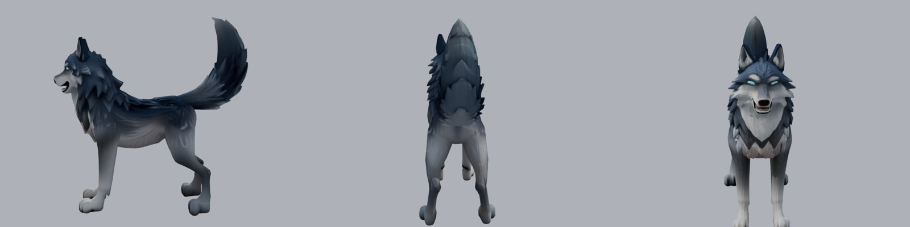
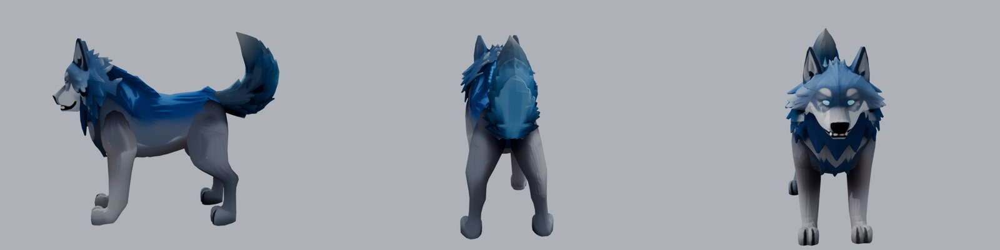
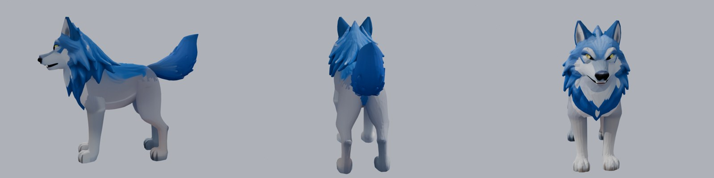
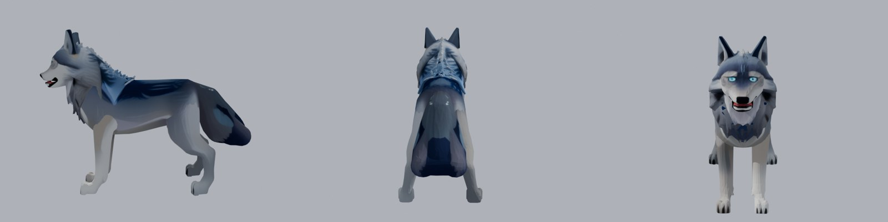

Nouveau loup : une seule queue
Ton loup actuel a 2 queues collées aux cuisses (vue de dos plus bas), et le générateur refait souvent cette erreur. Maintenant, chaque loup est contrôlé de dos avant de te le montrer : ceux-ci ont tous une seule queue. Pour chacun : profil, dos, face.




Pour comparer : ton loup actuel